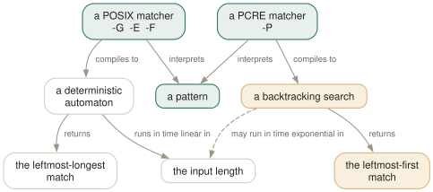

Day 10
The other engine
What -P buys, what it costs, and when to put grep down entirely.
By the end of today you can
- use lookaround and
\Kto extract a field without a capture group - name the three things
-Ptakes away from you before you reach for it - recognise the point at which the right answer is
sed,awkor a real parser
A different engine, not a bigger one
-P hands your pattern to PCRE2, a separate library with a separate language and a fundamentally different matching strategy. It is not “extended regular expressions with more features” — it answers some questions differently, and it can fail on inputs that -E handles without noticing.
Day 4 showed the visible half of that: POSIX returns the leftmost-longest match and PCRE the leftmost-first, so ab|abcd against abcd gives different answers under -E and -P. The invisible half is what each engine does to get there.

ab|abcd — and they have different worst cases. -P gives you lookaround and \K; the price is written along the dashed aspect, and is paid on the input you did not test.What -P buys you
Three things, and only the first two come up often.
- Lookaround
(?=...)and(?!...)assert what follows without consuming it;(?<=...)and(?<!...)do the same backwards, with the restriction that the assertion must be of fixed length.\K- Discard everything matched so far from the reported match. This is what makes field extraction possible, because grep has no way to print a capture group.
- Lazy quantifiers
*?,+?,??match as little as possible. POSIX has no equivalent, because leftmost-longest makes the idea meaningless.
$ echo 'Authorization: Bearer abc123' | grep -oP 'Bearer \K\S+'
abc123
$ echo 'price=10 cost=20' | grep -oP '(?<=cost=)\d+'
20
$ printf 'foo.c\nfoo.h\n' | grep -P '^foo\.(?!h$)'
foo.c
The first of those is genuinely difficult to write any other way in grep. -o prints the whole match and there is no facility for printing a group, so without \K or a lookbehind you have to pipe into sed or cut.
What it costs
Four things, in descending order of how often they will catch you out.
- One pattern only.
grep -P -e foo -e barfails withthe -P option only supports a single patternand exit 2. So does a two-line-ffile, and so does a newline inside the pattern operand. Use a|alternation instead. This appears nowhere in the manual page. - It can fail on data it finds awkward. A backtracking engine has a configured limit, and hitting it is an error rather than a wrong answer:
- It may not be there at all. PCRE support is a compile-time option. On a minimal container or a BSD you may get “support for the -P option is not compiled into this --disable-perl-regexp binary”, and your script has no fallback.
- It is the least portable thing in this course. Every other option here is POSIX or a long-standing GNU extension.
-Pis GNU-plus-a-library.
$ python3 -c "print('a'*40+'X')" > bt.txt
$ grep -P '(a+)+$' bt.txt
grep: bt.txt: exceeded PCRE's backtracking limit
$ echo $?
2
$ grep -E '(a+)+$' bt.txt
$ echo $?
1
Matching across lines
grep is a line filter, and no option changes that — but -z changes what a line is. With NUL as the terminator, a whole file becomes one record, and a -P pattern can then match across newlines.
$ printf 'BEGIN\nmiddle\nEND\nother\n' | grep -Pzo 'BEGIN\n.*\nEND'
BEGIN
middle
END
This works, and it is still usually the wrong tool. A multi-line pattern over a whole file loaded as one record is what awk with RS, sed with its hold space, or a small script are for. Reach for -Pz for a one-off at the command line, not for something you will have to maintain.
When to put grep down
The boundary is sharper than it looks: grep finds lines. The moment you are reaching inside a line to extract or rewrite structure, you have left its problem domain, and the pipeline of three greps and a cut that you are about to write is a symptom.
sed- Substitution, deletion, and printing a capture group.
sed -n 's/.*id=\([0-9]*\).*/\1/p'is the extraction grep cannot do. awk- Anything involving columns, arithmetic, accumulation across lines, or two conditions on different fields.
jq,yq,xmlstarlet- Anything with nesting. A regular expression cannot match balanced delimiters; this is not a skill issue.
rg/ag- When you want
.gitignoreawareness and parallel recursion. Faster on trees, and Day 7's exclusion lists become unnecessary. comm,join- When the pattern list is really a second file you are matching against, and
-fis starting to strain.
And when grep is right, it is very right. A single pass, linear time, no dependencies, present on every machine you will ever log into, and a status code the shell understands.
What to read next, and today's habit
The manual page ends by admitting it “is maintained only fitfully; the full documentation is often more up-to-date”. That is not false modesty — this course found four places where the page and the 3.12 binary disagree. info grep is the complete manual and is worth an hour.
info grep- The full manual, with the usage examples and performance notes the man page omits.
regex(7)- The POSIX regular-expression language on its own terms, without grep's options around it.
pcre2syntax(3)- The
-Planguage. Short, and the right page to keep open the first few times. glob(7)- The other pattern language, from Day 7.
The habit to keep is the one from Day 1, because it survives every version change: when a grep prints nothing, find out whether that means nothing matched or nothing was read. Everything else in this course is detail on top of that.
# ~/grep-recipes.sh
#
# Day 10: field extraction. \K drops everything to its left from the match.
grep -oP 'Bearer \K\S+' headers.txt
# Day 10: -P takes ONE pattern. Use an alternation, never two -e options.
grep -P 'ERROR|WARN' app.log
# Day 10: the whole file as one record, so a pattern can cross newlines.
grep -Pzo 'BEGIN\n.*\nEND' file | tr '\0' '\n'
# Day 10: last step of the course - delete every line above that you
# can no longer explain to someone else.
New vocabulary
Options
| Option | Does |
|---|---|
-P, --perl-regexp | Use the PCRE2 engine. Accepts exactly one pattern, and may not be compiled in. |
\d \s \w | Digit, whitespace, word character. The POSIX spellings are [[:digit:]] and friends. |
(?=...) and (?!...) | Lookahead: assert what follows without consuming it. |
(?<=...) and (?<!...) | Lookbehind: assert what precedes. The length must be fixed. |
\K | Drop everything matched so far from the reported match. A lookbehind without the length rule. |
*? +? ?? | Lazy quantifiers: match as little as possible. POSIX has no equivalent. |
-Pz | NUL-terminated input, so a pattern can match across newlines. The manual calls this experimental. |
Drillsdo these in a real terminal, today
Self-check
Answer out loud first, then unfold.
A colleague replaces grep -E 'ERROR|WARN' app.log with grep -P 'ERROR|WARN' app.log and it works. They then try to split it into grep -P -e ERROR -e WARN app.log and it fails. Why does the alternation work but the two options not?
-P accepts exactly one pattern. The alternation is one pattern containing a |, which is fine. Two -e options are two patterns, and grep refuses with the -P option only supports a single pattern and exit 2. The same restriction applies to a -f file with two lines in it, and to a newline inside the pattern operand.
This limitation appears nowhere in the manual page — the -P entry mentions only that it is experimental with -z and may warn about unimplemented features. It matters most when a script builds its pattern list dynamically, because it works fine right up until the list has two entries in it.
You need to pull the token out of Authorization: Bearer abc123. Why can grep -oP 'Bearer \K\S+' do this when no -E pattern can?
-o prints the whole match, and POSIX regular expressions give you no way to say “match this part but do not report it”. There are no capture groups in grep's output — \1 exists inside a pattern for back-references, but grep never prints a group, only the whole match.
\K resets the start of the reported match to the current position, so everything before it is a condition rather than part of the answer. A lookbehind (?<=Bearer )\S+ does the same job but requires a fixed-length assertion, which \K does not. If you find yourself wanting this often, that is a signal that sed -n 's/.../\1/p' or awk is the better tool.
The pattern (a+)+$ against forty as followed by an X makes grep -P fail with an error, while grep -E answers instantly. Is the POSIX engine simply better?
For this class of pattern, yes, and it is not a close call. A POSIX regular expression without back-references can be compiled into a deterministic automaton and matched in time linear in the input, no matter how the pattern is written. (a+)+$ is a nested quantifier that a backtracking engine explores exponentially many ways; PCRE hits its configured backtracking limit and gives up with exit 2 rather than running forever.
So the limit is a safety net, not a bug — but it means -P can fail on input it merely finds awkward, which -E never does. If a pattern is going to run unattended over data you do not control, that asymmetry is a reason to stay with -E. Remember from Day 4 that adding a back-reference to an -E pattern forfeits the same guarantee.
You have written grep -oP '(?<="name": ")[^"]*' data.json and it works on today's file. Why is this still the wrong tool?
Because JSON is not a regular language and the file is only cooperating by accident. The pattern breaks on an escaped quote inside a value, on a different key order, on whitespace after the colon, on a name key nested somewhere you did not mean, and on any pretty-printer that puts the value on the next line.
The rule that has aged well: grep finds lines, and once you are reaching inside a line to pull out structure you have left grep's problem domain. Use jq for JSON, awk for columns, sed for substitutions, and a real parser for anything with nesting in it. grep's job is to find the line and hand it over.
Cheat sheet
-P the PCRE2 engine. A DIFFERENT engine, not a bigger one.
leftmost-FIRST (POSIX is leftmost-longest) - 'ab|abcd' differs
(?=x) (?!x) lookahead, positive / negative
(?<=x) (?<!x) lookbehind - the assertion must be FIXED LENGTH
\K drop everything to the left from the reported match
*? +? ?? lazy: match as little as possible
\d \s \w POSIX already has [[:digit:]] [[:space:]] \w
-Pz NUL records, so a pattern can cross newlines ('experimental')
# the four costs, in the order they will bite you:
# 1. ONE pattern only - two -e options exit 2. NOT IN THE MAN PAGE.
# 2. backtracking limit: '(a+)+$' EXITS 2 where -E answers in 10ms
# 3. may not be compiled in at all
# 4. least portable thing in this course
# grep finds LINES. Reaching inside one? sed / awk / jq / a real parser.
Everything through Day 10
Commands
| Command | Does |
|---|---|
grep root /etc/passwd | Search one named file. No filename prefix on the output. |
grep root /etc/passwd /etc/group | Search several. Output gains a file: prefix automatically. |
grep root | No file operand: read standard input. From a terminal, this waits for you. |
grep -r root | No file operand and -r: search the working directory instead. |
cmd | grep root - | A file operand of - is standard input, mixable with real files. |
echo $? | Read the status grep just returned. The habit this whole day is about. |
grep -e -v file.txt | Search for the literal string -v. -e protects a pattern that starts with a dash. |
grep -f patterns.txt data.txt | Take patterns from a file, one per line. The workhorse for long lists. |
cut -f1 ids.csv | grep -f - data.txt | Patterns from a pipe. -f - reads them from standard input. |
if grep -q PAT f; then | The correct predicate form. No output, stops at the first match. |
grep -q PAT f || [ $? -eq 1 ] | Succeed on “no match”, still fail on a genuine error. |
grep -rlZ PAT . | xargs -0 CMD | NUL-separated file names, safe for every legal name. |
find . -name '*.c' -print0 | xargs -0 grep -Hn PAT | When the filter needs directories, not just base names. |
${PIPESTATUS[0]} | bash: the status of the first command in the pipeline, not the last. |
ps aux | grep '[s]shd' | The bracket trick: the pattern no longer matches its own command line. |
Options
| Option | Does |
|---|---|
-V, --version | Print the version and exit. Know which grep you are actually running. |
--help | Print the option summary and exit. Shorter and better organised than the man page. |
-- | End of options. Everything after it is a pattern or a filename, never a flag. |
-i, --ignore-case | Match regardless of case. What counts as “the same letter” depends on the locale. |
--no-ignore-case | Cancel an earlier -i. The last of the two on the line wins. |
-v, --invert-match | Select the lines that did not match. Applied once, after all patterns. |
-w, --word-regexp | Require the matched substring to be bounded by non-word characters or line ends. |
-x, --line-regexp | Require the match to be the entire line. Silently overrides -w. |
-e PAT, --regexp=PAT | Add a pattern. Repeatable, and combinable with -f. |
-f FILE, --file=FILE | Add every line of FILE as a pattern. An empty file matches nothing at all. |
-y | Undocumented synonym for -i. In neither the man page nor --help, but 3.12 accepts it. |
. | Match any single character. Whether it matches an encoding error is unspecified. |
[abc] | Match one character from the list. |
[^abc] | Match one character not in the list. The ^ must come first. |
[a-d] | A range. In the C locale, ASCII order; elsewhere the standard says it is unspecified. |
[[:digit:]] | A named class. The outer brackets are yours, the inner ones are part of the name. |
^ and $ | Anchor to the start and end of a line. They match a position, not a character. |
\< and \> | Anchor to the start and end of a word. A GNU extension. |
\b and \B | Anchor at, and not at, a word edge. \b is either edge; \< is only the left. |
\w and \W | Shorthand for [_[:alnum:]] and [^_[:alnum:]]. Note the underscore. |
* | Zero or more of the preceding item. The only repetition operator BRE spells the same way. |
? and + | At most one, and at least one. In BRE you must write \? and \+. |
{n,m} | Between n and m times. {,m} with no lower bound is a GNU extension. |
| | Alternation, and the loosest-binding operator there is. BRE spells it \|. |
(...) | Group, to override precedence. BRE spells it \(...\). |
\1 … \9 | Re-match the exact text the nth group captured. Slow, and worth avoiding. |
-E, --extended-regexp | Extended syntax: the operators above are bare. What you usually want. |
-G, --basic-regexp | Basic syntax: ? + { | ( ) need backslashes. The default. |
-F, --fixed-strings | No regex at all. Every pattern is a literal string, and it is the fastest matcher. |
-c, --count | Print the number of selected lines per file, not the number of matches. |
-l, --files-with-matches | Print each filename that had a match, and stop reading that file at the first one. |
-L, --files-without-match | Print each filename that had none. Read the gotcha about its exit status. |
-o, --only-matching | Print each matched substring on its own line. Non-overlapping, empty matches dropped. |
-q, --quiet, --silent | Print nothing; exit 0 on the first match. The right way to use grep as a test. |
-m NUM, --max-count=NUM | Stop after NUM selected lines. -m0 reads nothing at all. |
-s, --no-messages | Suppress error messages about unreadable files. Does not change the exit status. |
--color[=WHEN] | WHEN is never, always or auto. Nothing else, and abbreviations are refused. |
GREP_COLORS | Colon-separated SGR capabilities. Defaults to ms=01;31:mc=01;31:sl=:cx=:fn=35:ln=32:bn=32:se=36. |
-A NUM, --after-context=NUM | Print NUM lines after each match. |
-B NUM, --before-context=NUM | Print NUM lines before each match. |
-C NUM, --context=NUM | Print NUM lines on both sides. |
-NUM | Bare number: identical to -C NUM. grep -2 pat is the one worth typing. |
--group-separator=SEP | Print SEP instead of -- between non-adjacent groups. |
--no-group-separator | Print no separator at all. What you want before piping into another tool. |
-n, --line-number | Prefix each output line with its 1-based line number. |
-H, --with-filename | Force the filename prefix. Automatic with two or more files. |
-h, --no-filename | Suppress the filename prefix. Automatic with one file. |
-b, --byte-offset | Prefix the 0-based byte offset. With -o, the offset of the match itself. |
-T, --initial-tab | Line the content up on a tab stop, and pad the numeric fields to a fixed width. |
--label=LABEL | Call standard input LABEL instead of (standard input). |
-r, --recursive | Descend into directories, following symbolic links only if named on the command line. |
-R, --dereference-recursive | Descend, following every symbolic link. Can loop forever on a cyclic tree. |
-d ACTION, --directories=ACTION | read (the default, which fails on Linux), skip, or recurse — the last being -r. |
-D ACTION, --devices=ACTION | read (default) or skip, for devices, FIFOs and sockets. skip stops grep blocking on a pipe. |
--include=GLOB | Search only files whose base name matches GLOB. |
--exclude=GLOB | Skip files whose base name matches GLOB. |
--exclude-dir=GLOB | Skip directories whose base name matches GLOB. Trailing slashes are ignored. |
--exclude-from=FILE | Read a list of --exclude globs from a file, one per line. |
--binary-files=TYPE | TYPE is binary (default), text or without-match. |
-a, --text | Treat binary input as text. Equivalent to --binary-files=text. |
-I | Treat binary input as non-matching. Equivalent to --binary-files=without-match. |
LC_ALL | Overrides every locale category at once. The variable to set in a script. |
LC_CTYPE | Decides the character encoding: what a character is, and what is whitespace. |
LC_COLLATE | Decides collating order, which is what range expressions like [a-z] consult. |
LANG | The fallback when neither LC_ALL nor the specific LC_* variable is set. |
POSIXLY_CORRECT | Stops grep permuting options after file names. Changes parsing, not matching. |
-Z, --null | Write a NUL after each file name instead of a newline. Pairs with xargs -0. |
-z, --null-data | Treat input and output lines as NUL-terminated. Not the same option as -Z. |
--line-buffered | Flush after every output line. Costs throughput; needed when feeding a live tail. |
-P, --perl-regexp | Use the PCRE2 engine. Accepts exactly one pattern, and may not be compiled in. |
\d \s \w | Digit, whitespace, word character. The POSIX spellings are [[:digit:]] and friends. |
(?=...) and (?!...) | Lookahead: assert what follows without consuming it. |
(?<=...) and (?<!...) | Lookbehind: assert what precedes. The length must be fixed. |
\K | Drop everything matched so far from the reported match. A lookbehind without the length rule. |
*? +? ?? | Lazy quantifiers: match as little as possible. POSIX has no equivalent. |
-Pz | NUL-terminated input, so a pattern can match across newlines. The manual calls this experimental. |